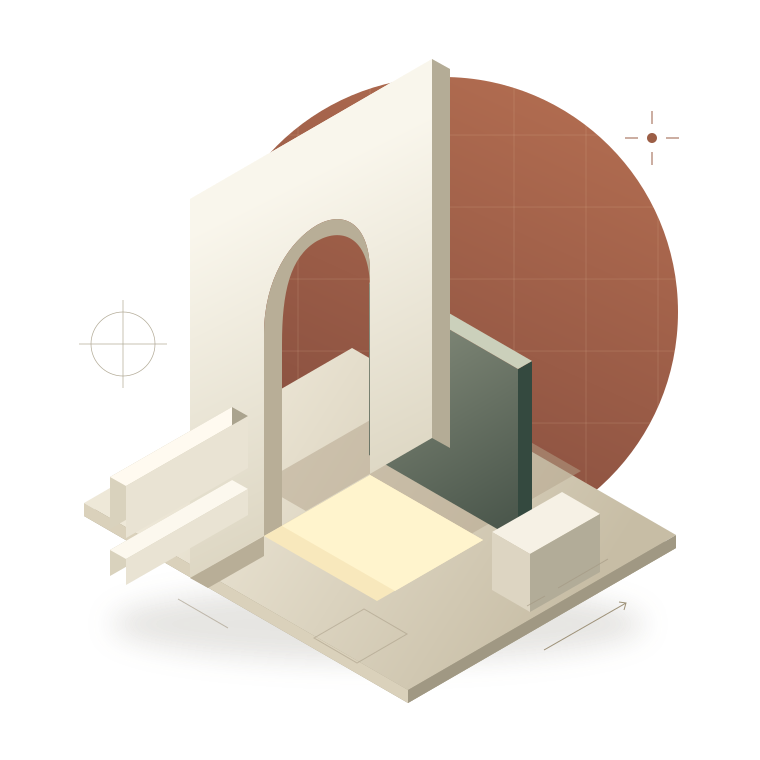
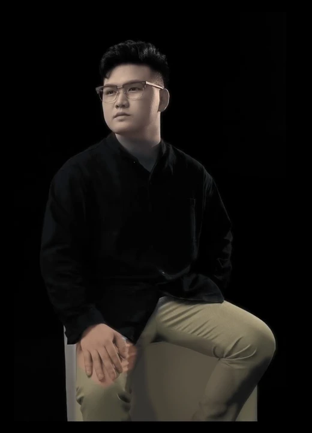
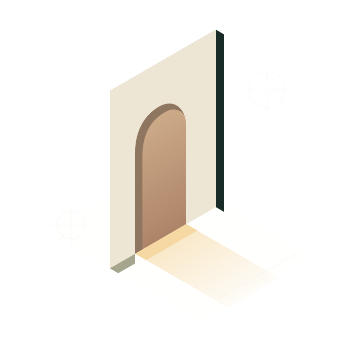

龙湖观萃Guancui
Residence.
以空间为序，
让日常有光。
A place for life.
A frame for light.

- 项目地址PROJECT LOCATION
- 重庆龙湖观萃Longfor Guancui, Chongqing
- 项目面积FLOOR AREA
- 121平方米 m²
- 设计类型PROJECT TYPE
- 家居空间设计Residential Interior Design
- 设计团队DESIGN TEAM
- 杨滔YANG TAO
空间全景SPATIAL OVERVIEW
空间序列 · 动线规划SPATIAL SEQUENCE & CIRCULATION
光风协同 · 采光通风DAYLIGHT & AIRFLOW
夜境光序 · 人工照明LAYERED ARTIFICIAL LIGHTING
配乐MUSIC · Monkeys Spinning Monkeys — Kevin MacLeod (incompetech.com) · CC BY 4.0音量及编码已调整VOLUME & ENCODING ADAPTED
配乐MUSIC · Monkeys Spinning Monkeys — Kevin MacLeod (incompetech.com) · CC BY 4.0音量及编码已调整VOLUME & ENCODING ADAPTED
配乐MUSIC · Monkeys Spinning Monkeys — Kevin MacLeod (incompetech.com) · CC BY 4.0音量及编码已调整VOLUME & ENCODING ADAPTED
配乐MUSIC · Monkeys Spinning Monkeys — Kevin MacLeod (incompetech.com) · CC BY 4.0音量及编码已调整VOLUME & ENCODING ADAPTED
01 / 05 · 客厅LIVING ROOM
自然有序，温润共生。
Natural textures, a considered harmony.
奶油色与浅木色铺陈基底，砖红与橄榄绿点染日常。Cream and light timber, accented with terracotta and olive.
基底BASE
奶油白 · 原木色Cream · Natural oak
肌理TEXTURE
石材 · 编织 · 织物Stone · Woven fibre · Fabric
点睛ACCENT
砖红皮革 · 橄榄绿Terracotta leather · Olive green
统一墙面与织物的柔和基调。A soft foundation across walls and textiles.
点击色卡查看搭配思路 · 示意色以原图为准SELECT A SWATCH TO EXPLORE · COLOURS ARE INDICATIVE; REFER TO THE ORIGINAL BOARD
02 / 05 · 餐厨区DINING & KITCHEN
烟火之间，质朴相融。
Honest materials for everyday rituals.
以木与石构成餐厨的连续界面，织物和陶色增添生活温度。Continuous timber and stone, softened by textiles and earthen accents.
基底BASE
米白 · 暖木色Ivory · Warm timber
肌理TEXTURE
石材 · 木纹 · 亚麻Stone · Wood grain · Linen
点睛ACCENT
陶色 · 橄榄绿 · 金属Earthen red · Olive · Metal
连续浅色界面让餐厨保持清爽。Light surfaces keep the dining and kitchen area calm.
点击色卡查看搭配思路 · 示意色以原图为准SELECT A SWATCH TO EXPLORE · COLOURS ARE INDICATIVE; REFER TO THE ORIGINAL BOARD
03 / 05 · 主卧PRIMARY BEDROOM
把安静，留给肌理。
A quiet retreat, rich in texture.
两张搭配图共同呈现主卧的材质关系：温润木作、柔软织物与低饱和暖色。Two views explore warm timber, soft textiles and muted earth tones.
基底BASE
米白 · 浅驼 · 暖木色Ivory · Light camel · Warm timber
肌理TEXTURE
织物 · 玻璃砖 · 陶砖Textiles · Glass blocks · Ceramic tile
点睛ACCENT
锈红 · 橄榄绿 · 姜黄Rust · Olive · Ochre
墙面、床品与窗帘形成安静背景。Walls, bedding and curtains create a restful backdrop.
点击色卡查看搭配思路 · 示意色以原图为准SELECT A SWATCH TO EXPLORE · COLOURS ARE INDICATIVE; REFER TO THE ORIGINAL BOARD
04 / 05 · 儿童房CHILDREN’S ROOM
柔软底色，盛放童趣。
A gentle canvas for a playful world.
原木与米白保持空间清爽，以彩虹织物、柔粉与橙红点亮成长日常。Ivory and timber form a calm canvas for playful textiles and soft colour.
基底BASE
米白 · 浅棕 · 原木色Ivory · Light brown · Natural timber
肌理TEXTURE
绒毯 · 织物 · 木作Tufted rug · Textiles · Timber
点睛ACCENT
粉杏 · 橙红 · 浅蓝灰Apricot pink · Orange red · Blue grey
给彩色织物与玩具留出清晰背景。A calm setting for colourful textiles and toys.
点击色卡查看搭配思路 · 示意色以原图为准SELECT A SWATCH TO EXPLORE · COLOURS ARE INDICATIVE; REFER TO THE ORIGINAL BOARD
05 / 05 · 阳台BALCONY
木石之间，自然延伸。
Wood, stone and a living connection outdoors.
两张搭配图呈现休闲与洗衣区域，以木石、编织和植物延续室内的自然语汇。Two views connect seating and utility areas through timber, stone, woven fibre and planting.
基底BASE
米白 · 浅棕 · 暖木色Ivory · Taupe · Warm timber
肌理TEXTURE
石材 · 木格栅 · 编织Stone · Timber battens · Woven fibre
点睛ACCENT
植物绿 · 深木色Botanical green · Dark timber
浅色石材与织物延续室内基调。Light stone and textiles carry the interior palette outside.
点击色卡查看搭配思路 · 示意色以原图为准SELECT A SWATCH TO EXPLORE · COLOURS ARE INDICATIVE; REFER TO THE ORIGINAL BOARD
客厅LIVING ROOM
柔软落座，日常成诗。
Soft forms, thoughtful everyday living.
从围坐交流到安静阅读，以柔软织物与温润家具串联日常。Soft textiles and warm furniture connect conversation, rest and reading.
点击分类，查看搭配思路。CHOOSE A CATEGORY TO EXPLORE.
搭配要素KEY PIECES
模块沙发 · 休闲椅 · 书桌椅组合Modular sofa · Lounge chair · Desk and chair
设计解读DESIGN NOTES
以低矮沙发打开视线，休闲椅与书桌椅形成相互呼应的停留角落。Low seating keeps sightlines open; the lounge chair and desk create complementary places to pause.
搭配要素依据本页软装分析图整理，用于表达设计意向。SELECTIONS FOLLOW THE SUPPLIED BOARD AND EXPRESS THE DESIGN INTENT.
餐厨区DINING & KITCHEN
围桌而坐，烟火有序。
Everyday rituals, gathered around the table.
实木餐桌与曲线餐椅形成主景，长凳、织物与陶器补足生活温度。A timber table and curved chairs set the scene, complemented by a bench, textiles and ceramics.
点击分类，查看搭配思路。CHOOSE A CATEGORY TO EXPLORE.
搭配要素KEY PIECES
实木餐桌 · 餐椅 · 长凳Timber dining table · Dining chairs · Bench
设计解读DESIGN NOTES
长凳与餐椅组合，保留不同的围坐方式；木色呼应上方梁体。Chairs and a bench offer varied seating, with timber tones echoing the beams above.
搭配要素依据本页软装分析图整理，用于表达设计意向。SELECTIONS FOLLOW THE SUPPLIED BOARD AND EXPRESS THE DESIGN INTENT.
主卧PRIMARY BEDROOM
轻柔包裹，安放身心。
A gentle retreat, layered for rest.
以柔和床品、轻盈窗帘和温润小家具，延续宁静而有层次的卧室氛围。Soft bedding, light curtains and warm small furniture shape a calm, layered retreat.
点击分类，查看搭配思路。CHOOSE A CATEGORY TO EXPLORE.
搭配要素KEY PIECES
床品组合 · 梳妆凳Bedding ensemble · Vanity stool
设计解读DESIGN NOTES
围绕床与梳妆角组织软装，以圆润的凳体弱化柜体的直线感。The bed and dressing corner form the composition, with a rounded stool softening the joinery.
搭配要素依据本页软装分析图整理，用于表达设计意向。SELECTIONS FOLLOW THE SUPPLIED BOARD AND EXPRESS THE DESIGN INTENT.
儿童房CHILDREN’S ROOM
童趣有度，陪伴生长。
A playful room with space to grow.
木色家具打底，藤编、柔软织物与童趣造型共同构成陪伴成长的房间。Timber furniture, woven forms and soft textiles create a playful room for growing up.
点击分类，查看搭配思路。CHOOSE A CATEGORY TO EXPLORE.
搭配要素KEY PIECES
实木床 · 学习桌 · 学习椅Timber bed · Study desk · Study chair
设计解读DESIGN NOTES
休憩与学习各有位置，温润木色统一不同功能的家具。Rest and study each have their place, connected by a warm timber palette.
搭配要素依据本页软装分析图整理，用于表达设计意向。SELECTIONS FOLLOW THE SUPPLIED BOARD AND EXPRESS THE DESIGN INTENT.
阳台BALCONY
绿意为伴，慢享片刻。
A green retreat for unhurried moments.
休闲椅、长凳和茶几围合小坐场景，植物与织物延续室内的温润气质。Lounge chairs, a bench and a small table create a relaxed setting amid plants and soft textiles.
点击分类，查看搭配思路。CHOOSE A CATEGORY TO EXPLORE.
搭配要素KEY PIECES
休闲椅 · 长凳 · 茶几Lounge chair · Bench · Side table
设计解读DESIGN NOTES
低矮家具沿阳台组织停留，保留通行与观景的空间。Low furniture creates places to pause while keeping circulation and views open.
搭配要素依据本页软装分析图整理，用于表达设计意向。SELECTIONS FOLLOW THE SUPPLIED BOARD AND EXPRESS THE DESIGN INTENT.
客厅LIVING ROOM
木与织物，回应日常。
Timber and textiles, made for everyday life.
由完整空间，走近材质、家具与生活的细部。FROM THE WHOLE SPACE TO ITS MATERIALS, FURNITURE AND EVERYDAY DETAILS.
从书柜到围坐，以木、藤与织物串联会客和阅读。Timber, woven forms and textiles connect gathering with quiet reading.
左侧阅全景 · 右侧翻细节 · 点击图片查看高清THE COMPLETE SPACE ON THE LEFT · LAYERED DETAILS ON THE RIGHT · CLICK AN IMAGE TO EXPLORE
餐厨区DINING & KITCHEN
烟火之间，细节有温。
Warmth in the details of everyday rituals.
由完整空间，走近材质、家具与生活的细部。FROM THE WHOLE SPACE TO ITS MATERIALS, FURNITURE AND EVERYDAY DETAILS.
石材与木色构成背景，红色桌旗与陶器点出日常温度。Stone and timber form the backdrop, with a red runner and ceramics adding warmth.
左侧阅全景 · 右侧翻细节 · 点击图片查看高清THE COMPLETE SPACE ON THE LEFT · LAYERED DETAILS ON THE RIGHT · CLICK AN IMAGE TO EXPLORE
主卧PRIMARY BEDROOM
安静之中，感受肌理。
A quiet retreat, rich in texture.
由完整空间，走近材质、家具与生活的细部。FROM THE WHOLE SPACE TO ITS MATERIALS, FURNITURE AND EVERYDAY DETAILS.
从床头到窗畔，在织物、木作与细小陈设间安放宁静。A quiet composition of textiles, joinery and small objects, from bedside to window.
左侧阅全景 · 右侧翻细节 · 点击图片查看高清THE COMPLETE SPACE ON THE LEFT · LAYERED DETAILS ON THE RIGHT · CLICK AN IMAGE TO EXPLORE
儿童房CHILDREN’S ROOM
柔软童趣，慢慢生长。
Soft details, with room to grow.
由完整空间，走近材质、家具与生活的细部。FROM THE WHOLE SPACE TO ITS MATERIALS, FURNITURE AND EVERYDAY DETAILS.
木色家具与柔软织物，容纳阅读、游戏与成长。Timber furniture and soft textiles make room for reading, play and growing up.
左侧阅全景 · 右侧翻细节 · 点击图片查看高清THE COMPLETE SPACE ON THE LEFT · LAYERED DETAILS ON THE RIGHT · CLICK AN IMAGE TO EXPLORE
阳台BALCONY
向景而坐，日常生趣。
A place to pause, close to nature.
由完整空间，走近材质、家具与生活的细部。FROM THE WHOLE SPACE TO ITS MATERIALS, FURNITURE AND EVERYDAY DETAILS.
藤椅、花台与生活柜体，让自然与日常在此相遇。Woven seating, planted borders and everyday joinery bring nature into daily life.
左侧阅全景 · 右侧翻细节 · 点击图片查看高清THE COMPLETE SPACE ON THE LEFT · LAYERED DETAILS ON THE RIGHT · CLICK AN IMAGE TO EXPLORE
归境成诗THE POETRY OF HOME
让设计回归生活，让家的故事徐徐展开。DESIGN BECOMES LIFE. THE STORY OF HOME UNFOLDS.
首次点击播放原声 · 离开暂停 · 返回续播CLICK TO START WITH SOUND · PAUSE ON EXIT · RESUME ON RETURN
给未来的居住者，TO THOSE WHO WILL CALL THIS HOME,
空间的答案，
终将写在生活里。
The meaning of a space
unfolds in the life within.
设计师 杨滔DESIGNER · YANG TAO
重庆千慕设计事务所
CHONGQING QIANMU DESIGN STUDIO点击聆听 · 开启声音CLICK TO LISTEN · SOUND ON

点击聆听设计师寄语LISTEN TO A NOTE FROM THE DESIGNER

设计有终章，
生活正开场。
The design is complete.
Life is just beginning.
感谢阅览，期待与您共筑理想的家。
Thank you for your time.
We look forward to shaping your home together.

设计团队 · 杨滔DESIGN TEAM · YANG TAO